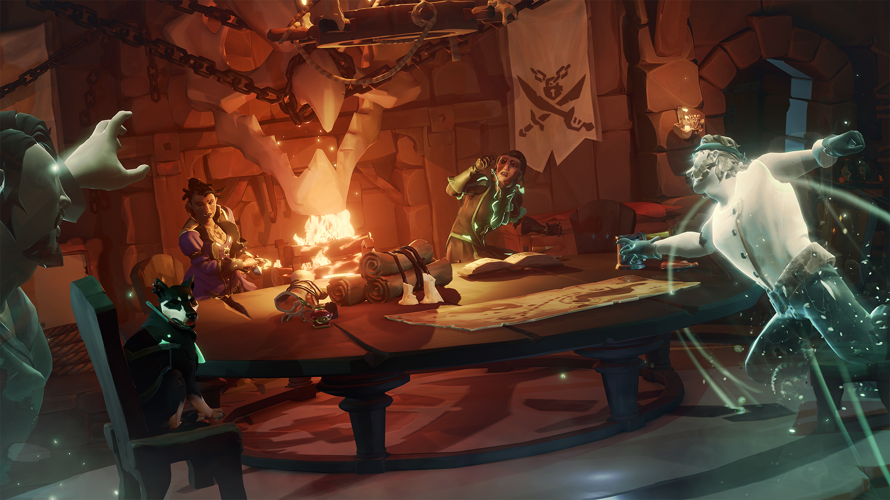
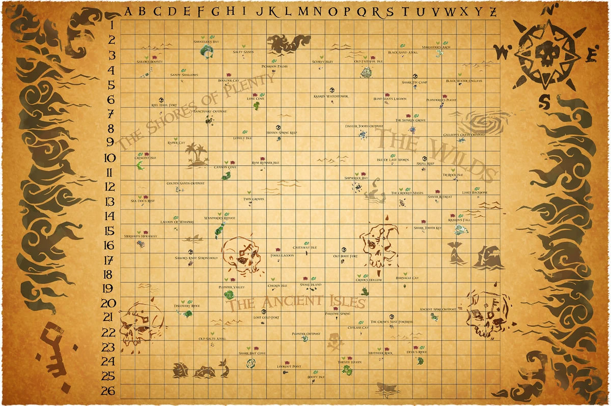
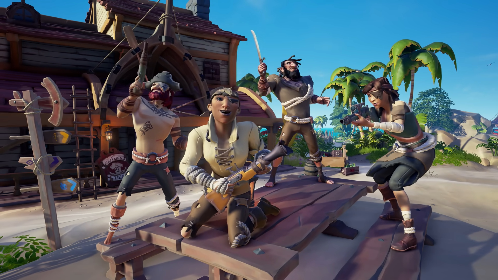
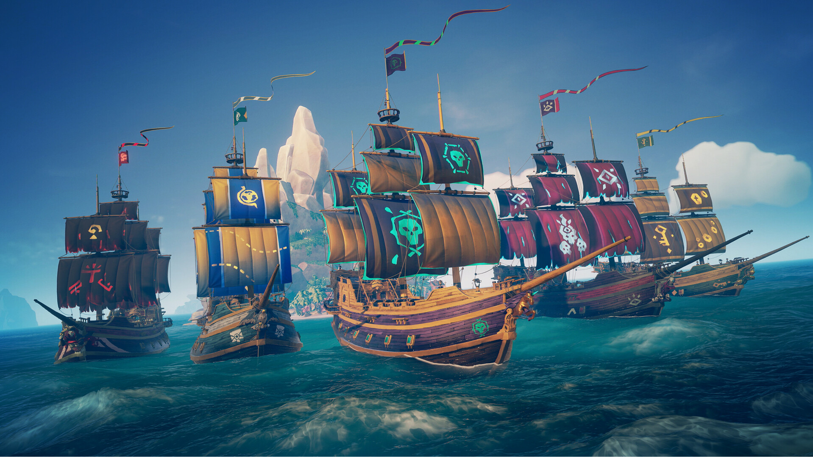
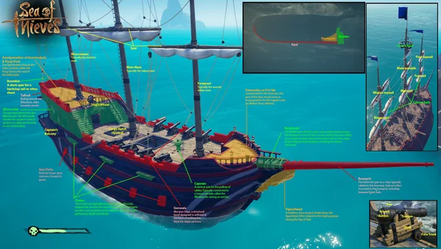
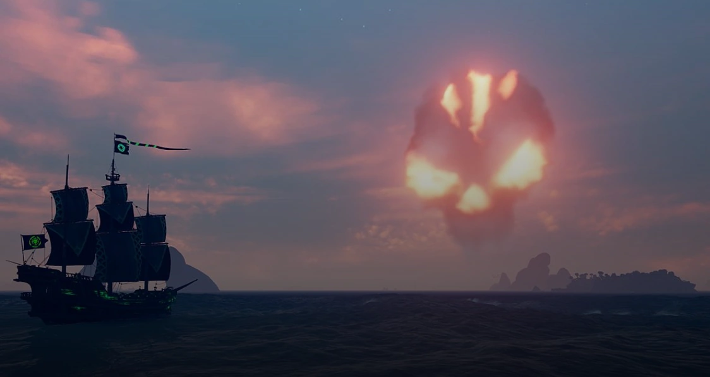

A Sea of Thieves egy kalóz tematikájú multiplayer akció-kalandjáték, amelyet a Rare fejlesztett és a Microsoft Studios adott ki. A játékosok szabadon felfedezhetik a nyílt világot, kincseket kereshetnek, harcolhatnak más játékosokkal és NPC-kel, valamint különböző kalóztevékenységekben vehetnek részt.

A játék egyik fő vonzereje a hatalmas nyílt világ, amelyet a játékosok szabadon felfedezhetnek. Számtalan sziget, hajóroncs és rejtett kincs vár arra, hogy felfedezzék őket. A játékosok szabadon választhatják meg, merre indulnak, milyen küldetéseket vállalnak el, és milyen kalandokba bocsátkoznak.

A Sea of Thieves erősen épít a multiplayer élményre. A játékosok csapatokban, akár barátaikkal együtt, akár online ismeretlenekkel együttműködve hajóznak és harcolnak. A közös játék és a csapatmunka kulcsfontosságú a sikeres kalózkodásban, legyen szó hajóvezetésről, harcról vagy kincskeresésről.

A játékban különböző küldetések (Voyages) érhetők el, amelyeket a három fő társaságtól (Gold Hoarders, Order of Souls, Merchant Alliance) lehet felvenni. Ezek a küldetések változatos kihívásokat kínálnak, mint például kincskeresés, szörnyek legyőzése és kereskedelmi feladatok teljesítése.

A játék látványvilága színes és rajzfilmszerű, ami egyedi hangulatot kölcsönöz a játéknak. A víz animációja és a naplementék különösen látványosak. A hangulatot tovább fokozza a kalózzenék és a különböző hanghatások, amelyek segítenek elmerülni a kalózkalandoknak a játékban.

A Sea of Thieves folyamatosan frissítéseket és új tartalmakat kap, amelyek új küldetéseket, hajókat, eseményeket és egyéb kiegészítőket hoznak a játékba. Ezek az frissítések gyakran szezonális eseményekkel és kihívásokkal is kiegészülnek, amelyek újabb okot adnak a játékosoknak a visszatérésre és a játék folytatására.
